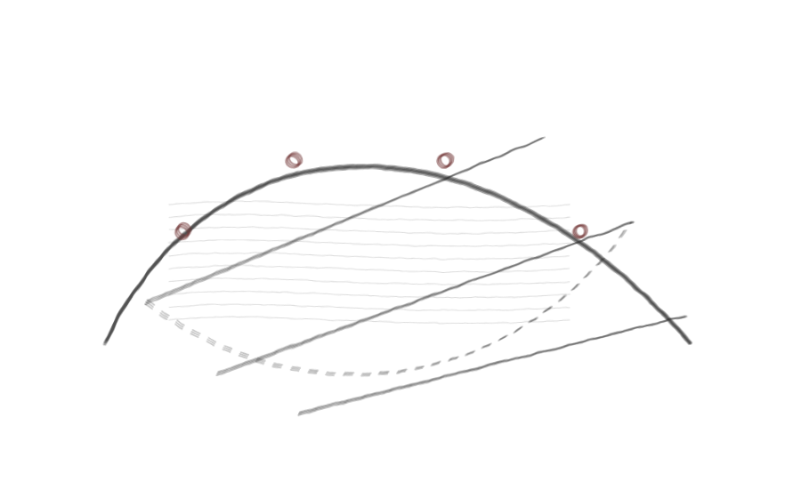

Orbits of linear series on the projective line

Table of Contents
- Section 1: Introduction
- Section 2: Equivariant orbit classes
- Section 3: Vanishing sequences and the Wronskian
- Section 4: Complete parametrisation of the orbit of a linear series
- Section 5: Localisation
- Section 6: Orbit specialisation
- Bibliography
Tags
| Tag | Type | Number |
|---|---|---|
| C88F | Theorem | 1.1 |
| 0C31 | Remark | 1.2 |
| 9F0E | Remark | 1.3 |
| 7440 | Theorem | 1.4 |
| B3FC | Theorem | 1.5 |
| AFBB | Proposition | 2.1 |
| F006 | Proof | |
| EF94 | Proposition | 2.2 |
| 3E99 | Proof | |
| 605C | Proposition | 2.3 |
| A84C | Proof | |
| 9951 | Proposition | 2.4 |
| 6381 | Proof | |
| 8691 | Proposition | 3.1 |
| DF3D | Proof | |
| 05E3 | Corollary | 3.2 |
| CF59 | Proof | |
| C47C | Proposition | 3.3 |
| 4E94 | Proof | |
| E5FB | Theorem | 4.1 |
| 8A99 | Lemma | 4.2 |
| 1D41 | Proof | |
| B8DD | Proof of Theorem 4.1 [E5FB] | |
| 38C5 | Proposition | 4.3 |
| 672D | Proof | |
| 22D8 | Corollary | 4.4 |
| 28F8 | Proof | |
| C78D | Theorem | 4.5 |
| E983 | Proof | |
| AAFF | Proposition | 5.1 |
| C9CB | Proof | |
| B181 | Proposition | 5.2 |
| CDA4 | Proof | |
| B49A | Proposition | 5.3 |
| ACFA | Proof | |
| 698E | Proposition | 5.4 |
| B5A7 | Proof | |
| DE3D | Theorem | 5.5 |
| B71E | Proof | |
| 53F9 | Theorem | 6.1 |
| B805 | Proof | |
| B5A8 | Remark | 6.2 |
| 6AC5 | Corollary | 6.3 |
| 2F02 | Proof | |
| 704D | Proposition | 6.4 |
| 2C43 | Proof | |
| 83FE | Remark | 6.5 |
| 8C9F | Proposition | 6.6 |
| 653C | Proof | |
| AFAD | Corollary | 6.7 |
| 0815 | Proof | |
| 7400 | Proposition | 6.8 |
| EF46 | Proof |